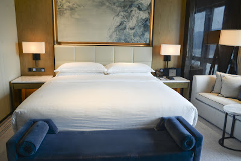
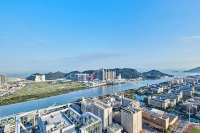
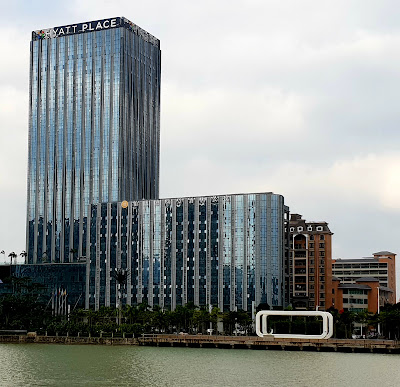
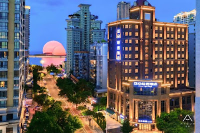
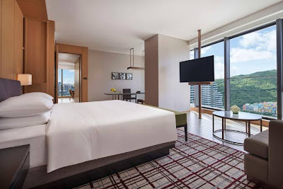
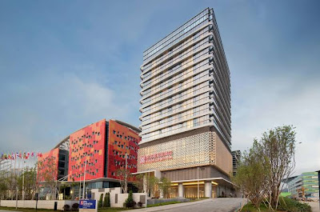

☔
Weather: hot & humid ~30°C,
showers + thunderstorms likely — but
no typhoon forecast. Plan indoor-leaning; keep gardens/waterfront as sunny-day swaps. Re-check Fri:
HKO ·
Macau SMG. Bring: umbrella, swimwear (hot spring), passports.
🗺️ The plan at a glance
| Fri — HK → Zhuhai | arrive ~21:00, hotpot |
| Sat — 中山 food + hot spring | yum cha · 乳鸽 · 温泉 |
| Sun — Macau day | Cotai · booked dinner · drive home |
🏨 Same hotel both nights (simplest with a car). Recommended base: a central Zhuhai hotel (top pick: Sheraton Zhuhai) — keeps Saturday's Zhongshan run short and Sunday's Macau crossing easy. See Hotels below.
📆 Day by day
Friday 3 July — HK → Zhuhai
Leave after work · gather 19:00 · Sam drives via HZMB bridge
19:00
Depart HK, drive via 港珠澳大橋 🚗 ~1h–1h15 incl. border
~20:45
Check in — hotel (see Hotels below). Drop bags.
21:15
Dinner — hotpot 🍲 灣區九號 (fresh-cut beef + 橫琴 oyster hotpot, ~¥89/pp · 7,000+ Dianping reviews).
Alt: 永興生蠔火鍋 (oyster, ¥91) or 金悅軒 seafood + dim sum (¥147). Book a table for the group.
22:45
Optional — 情侶路 night stroll or a 足浴 to unwind. Or just crash before the early Zhongshan start.
Saturday 4 July — 中山 (better food, fewer crowds) + hot spring ♨️
Head north to 中山 for food, wind south via the hot spring back toward Macau
09:30
Drive → 中山 石岐 🚗 ~1h–1h15
10:30
早茶 / Yum cha 🫖 —
陽光假日酒店 or
富華酒店. Try 石岐乳鴿 dim sum, 沙溪茶角, 蘆兜粽, 杏仁餅.
13:00
Lunch — 石岐乳鴿 🕊️ 石岐佬中山菜館 (康華路36號) — the benchmark roast pigeon (~¥90/pp). Cross-sourced, go near opening to beat the queue.
Quieter alt: 崖口乳鴿 (seaside village).
15:00
Sight / activity (pick one) — ☀️
中山詹園 garden (¥60) or
孫中山故里 (free) · ☔
孫文西路步行街 arcade · 💆
影院足道 massage (Sam's idea). More in "Between meals" below.
17:00
♨️ Hot spring — 三鄉 泉眼溫泉 (big modern 溫泉 + water-park, ~¥138–188/pp, open late; on-site massage).
Classic alt: 中山溫泉賓館 (露天温泉, garden resort). Covers the massage.
20:00
Dinner — 三鄉瀨粉 locally, or head back toward central Zhuhai for more choice (華發商都 / 拱北 near the hotel).
~21:00
Back to hotel (central Zhuhai) 🚗 三鄉→香洲 ~30 min
Sunday 5 July — Macau day → home
Drive into Macau · +2 friends join · dinner booked · drive back
11:00
Drive into Macau (Sam's car has the Macau permit) → park at a Cotai resort 🚗 ~20–40 min + border
12:00
Cotai 路氹 — all indoor/AC 🎰 Venetian canals · Londoner Crystal Palace · Galaxy 財運鑽石. Casino floor. Meet the +2 here (share a WeChat live pin). Egg tarts: Lord Stow's / Margaret's. ☀️ optional: 官也街 Taipa Village + 龍環葡韻 (next door).
19:30
Dinner — ✅ BOOKED 🍽️ Yeng Dou Jok, Fong Son San Chun III, 104-124 R. da Escola Náutica,
Taipa (right by Cotai). Table booked.
~22:00
Drive back to HK via HZMB 🚗 ~1h–1h30 incl. border. Bridge runs 24h — no ferry to catch.
🏨 Hotels — ¥400–800/night (2 rooms, same base both nights)
Sat we’re up in Zhongshan (north), Sun we’re in Macau (south). A central Zhuhai base keeps Saturday’s drive short (~40 min) with Macau still easy (~30 min). Hengqin hotels are 10–15 min from Macau but add ~30 min each way to Zhongshan on Saturday.
🟢 Central Zhuhai — best all-round for this trip

Sheraton Zhuhai 珠海華發喜來登 Recommended
華發商都 · central 香洲 · ~40 min to Zhongshan · pool · 352 reviews

Hilton Zhuhai 珠海希爾頓 2nd choice
灣仔 · sea-view facing Macau · central & lively

Hyatt Place Zhuhai Jinshi 凱悦嘉軒 value
南屏 · central-south · cheapest good option · pool

Atour Light 亞朵輕居 local brand
情侶路 · seaside 香洲 · popular domestic mid-range · 102 reviews
🔵 Hengqin — closest to Macau, but +30 min to Zhongshan on Sat

Hyatt Regency Hengqin 橫琴凱悦
橫琴 · 5-star · next to Macau/Cotai · mall-connected (創新方)
DT
DoubleTree by Hilton Hengqin
橫琴 · near Macau

Hilton Garden Inn Hengqin budget
橫琴 · cheapest of the set
Top pick: Sheraton Zhuhai — central, best-reviewed (352), short Saturday drive. Ratings shown are Google (same source for all, so comparable). Prices = live Google Hotels for the weekend (per room/night, ≈RMB) — reconfirm at booking. 2 rooms × 2 nights at the Sheraton ≈ ¥2,400 total. Photos: Google.
🍜 Where to eat (Dianping-vetted)
Chosen for high review volume on 大眾點評 (Dianping) — long-established locals' favourites, not promoted/paid listings. The number on the right = review count (higher = more corroborated). Thin (<500-review) and lopsided/bimodal listings were skipped.
Friday · Zhuhai — central 拱北 / 香洲, near the hotel
灣區九號 生蠔牛肉火鍋 hotpot
情侶南路 · beef + 橫琴 oyster hotpot · Sam's pick
永興生蠔火鍋 hotpot
拱北水灣路 · Zhuhai oyster hotpot
金悅軒海鮮酒家 seafood
拱北 · seafood + dim sum · easy group flagship
Saturday · 中山 Zhongshan
石岐佬中山菜館 Zhongshan cuisine
石岐乳鴿 & local classics · the benchmark
紅日飯店·中山脆肉鯇 specialty
小欖 · famous crispy grass-carp (脆肉鯇)
綠野仙蹤生態食府 garden
by 詹園 · garden dining · pairs with the garden visit
早茶 / yum cha (Sat AM): 石岐佬 also does dim sum, or a classic hotel 早茶 (陽光假日 / 富華). Try 石岐乳鴿, 沙溪茶角, 杏仁餅.
Sunday · Macau (Taipa)
Yeng Dou Jok 🍽️ ✅ booked
Taipa · R. da Escola Náutica · dinner reserved
Lunch/snacks: 官也街 Taipa Village + egg tarts (Lord Stow's / Margaret's).
🎯 Between meals — things to do
Fillers for the gaps. ☀️ = nicer in good weather · ☔ = indoor / rain-OK. Numbers = 大眾點評 review counts (picked high-volume, non-promoted spots).
Friday eve · Zhuhai — by the central hotels
🌆
情侶路 seaside walk — promenade past 珠海漁女 statue & the 日月貝 opera house. Easy after-dinner stroll. ☀️/mild eve
💆 足浴 / foot massage — unwind after the drive (central 拱北/香洲, ~¥140). ☔ See Saturday picks — same chains.
Saturday · 中山 Zhongshan — around the meals
🏛️
孫中山故里旅遊區 (南朗翠亨) — big heritage park: 孫中山故居 + museums,
free. Sits on the Zhuhai↔石岐 route. ☀️ + indoor halls
🎬
中山影視城 (南朗) — republic-era film sets, right by 故里 — pair the two.
3,972 rev🎡
幻彩摩天輪 + 岐江公園 (石岐) — riverside Ferris wheel, best at dusk.
4,001 rev🛍️
孫文西路步行街 (石岐) — historic covered arcade + snacks, rain-OK. ☔
💆
影院足道 / SPA massage (central 石岐, ~¥140–160) — Sam's idea: foot massage while you watch a film. 嶺南故事
2,776 rev · 康福德市中心店
2,422 rev. ☔
🌊
hot-day swap: 中山長江水世界 water-park
6,132 rev — or just keep the 泉眼溫泉 evening plan. ☀️
Sunday · Macau — between arrival & dinner
🎰 Cotai resorts (indoor, storm-proof) — Venetian gondolas + teamLab, Londoner, Galaxy 天浪淘園. Right where you park. ☔
⛪
大三巴牌坊 + 議事亭前地 — classic old-town Macau, ~15 min from Cotai. ☀️
🗼
澳門旅遊塔 Macau Tower — 233 m views (bungee if brave). ☔ indoor deck
🏘️
官也街 + 龍環葡韻 (Taipa) — Portuguese houses & egg tarts, next to your booked dinner. ☀️
🚗 Driving times (Sam's car)
| HK → Zhuhai (HZMB) | ~1h–1h15 |
| Zhuhai ↔ 中山 | ~1h |
| 中山 三鄉 → Hengqin | ~40 min |
| Hengqin → Macau (Cotai) | ~20–40 min |
| Macau → HK (HZMB) | ~1h–1h30 |
Free/cheap parking at Cotai resorts (validate with a spend). Bridge is fine 24h unless a real T8.
✅ Book & prep now
- Hotel — 2 rooms × 2 nights (central Zhuhai — Sheraton or similar) — Sat is peak, book today
- Fri hotpot — table for 5 at 灣區九號
- Hot spring — buy 泉眼溫泉 tickets on Ctrip (or pay on arrival)
- Alipay / WeChat Pay — bind a card before crossing (cash/HK cards not accepted)
- Apps — DiDi (backup), 高德地圖 (not Google Maps in the mainland)
- Docs (everyone) — 回鄉證 + HK ID + HK passport · Sam: car permits + insurance
- +2 friends — agree their route to Macau + Cotai meet point; pre-book 7 return seats if not driving with you
- Sunday dinner ✅ already booked